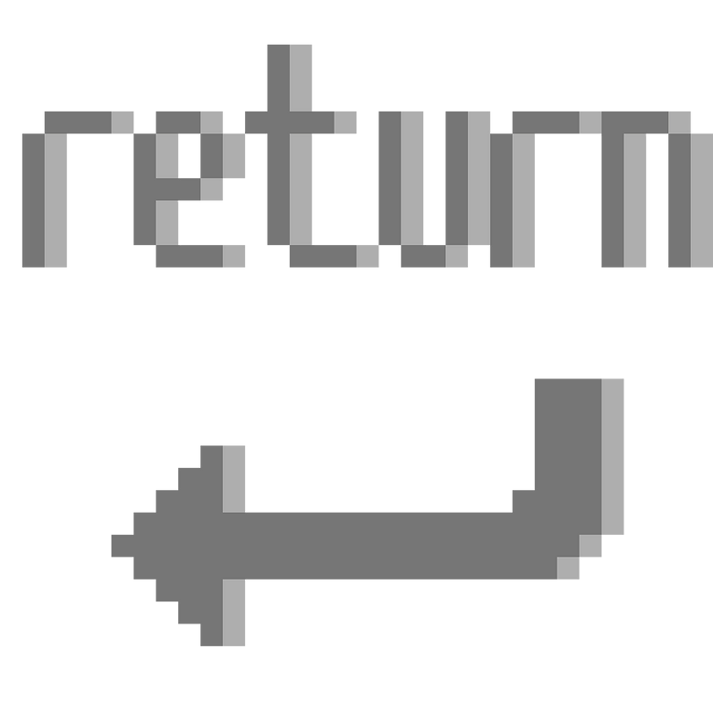

Devil’s Kettle Games was a project by myself and Haley Carter.
I wrote and scored the games, and Haley coded the first one and helped with the story for both.
Return

If you want to go straight into Shift, read a summary of Return here.
Shift
Context
From 2017-2019, Shift was in development hell.
In 2019, we decided to release the game as a Google Docs file.
There’s pseudocode to guide you though the intended logic of the gameplay:
Unfortunately, you’re going to have to keep track of a few variables yourself.
The most notable of these is canReturn - see the instructions on page 6.
Yellow text is links. When you see “continue here” in grey, the text “here” is a link.
Tabbed-in text is meant to be read only once.
Click here for the soundtrack while reading, here for the images.